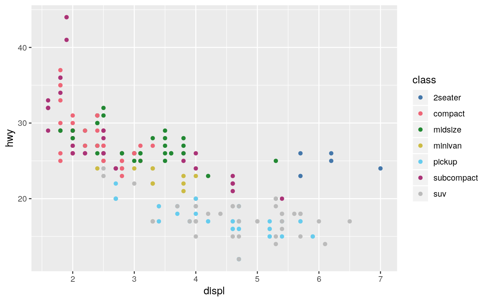
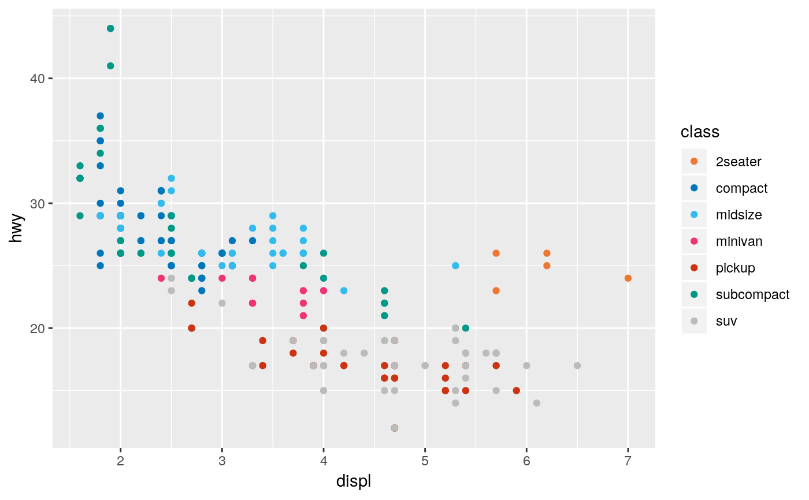
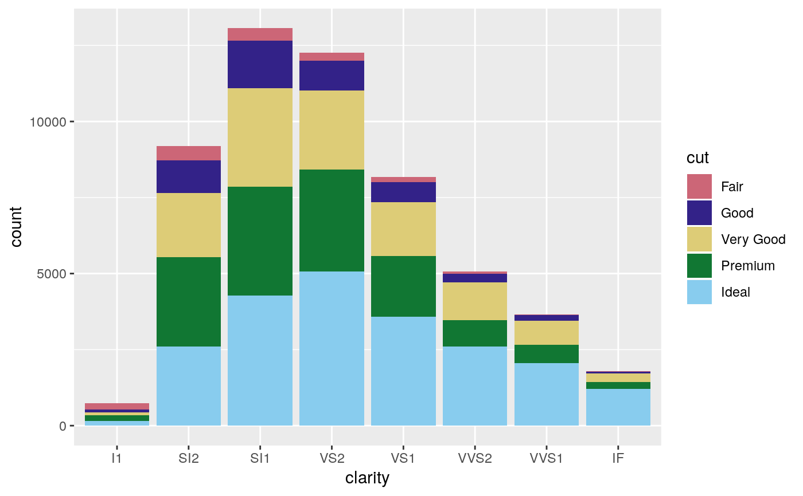
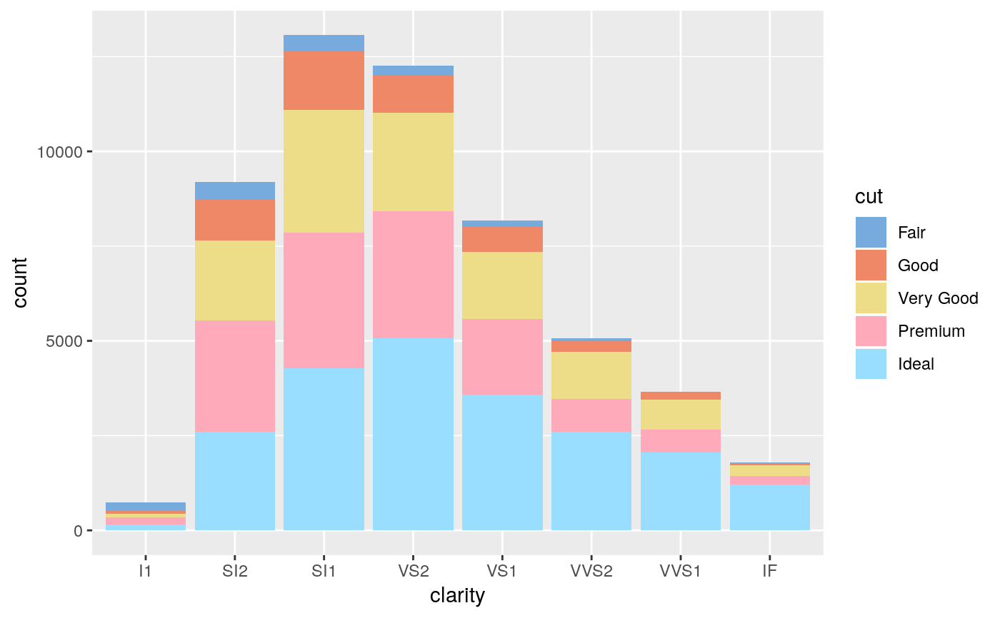
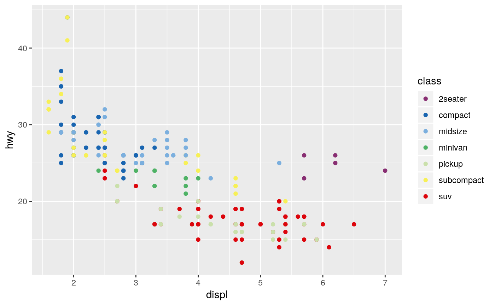
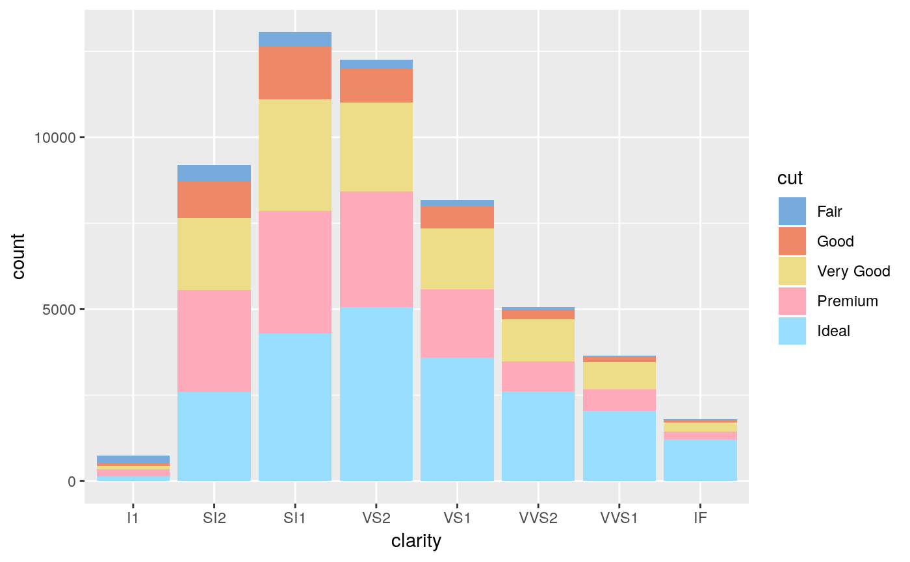

Provides qualitative colour scales from Paul Tol's Colour Schemes.
scale_colour_bright(..., reverse = FALSE, aesthetics = "colour") scale_color_bright(..., reverse = FALSE, aesthetics = "colour") scale_fill_bright(..., reverse = FALSE, aesthetics = "fill") scale_colour_contrast(..., reverse = FALSE, aesthetics = "colour") scale_color_contrast(..., reverse = FALSE, aesthetics = "colour") scale_fill_contrast(..., reverse = FALSE, aesthetics = "fill") scale_colour_vibrant(..., reverse = FALSE, aesthetics = "colour") scale_color_vibrant(..., reverse = FALSE, aesthetics = "colour") scale_fill_vibrant(..., reverse = FALSE, aesthetics = "fill") scale_colour_muted(..., reverse = FALSE, aesthetics = "colour") scale_color_muted(..., reverse = FALSE, aesthetics = "colour") scale_fill_muted(..., reverse = FALSE, aesthetics = "fill") scale_colour_pale(..., reverse = FALSE, aesthetics = "colour") scale_color_pale(..., reverse = FALSE, aesthetics = "colour") scale_fill_pale(..., reverse = FALSE, aesthetics = "fill") scale_colour_dark(..., reverse = FALSE, aesthetics = "colour") scale_color_dark(..., reverse = FALSE, aesthetics = "colour") scale_fill_dark(..., reverse = FALSE, aesthetics = "fill") scale_colour_light(..., reverse = FALSE, aesthetics = "colour") scale_color_light(..., reverse = FALSE, aesthetics = "colour") scale_fill_light(..., reverse = FALSE, aesthetics = "fill") scale_colour_rainbow(..., reverse = FALSE, aesthetics = "colour") scale_color_rainbow(..., reverse = FALSE, aesthetics = "colour") scale_fill_rainbow(..., reverse = FALSE, aesthetics = "fill")
| ... | Arguments passed to |
|---|---|
| reverse | A |
| aesthetics | A |
The qualitative colour schemes are used as given (no interpolation): colours are picked up to the maximum number of supported values.
| Palette | |
| Max. | |
| bright | 7 |
| contrast | |
| 3 | |
| vibrant | 7 |
| muted | |
| 9 | |
| pale | 6 |
| dark | |
| 6 | |
| light | 9 |
According to Paul Tol's technical note, the bright, contrast,
vibrant and muted colour schemes are colour-blind safe.
The light colour scheme is reasonably distinct for both normal or
colour-blind vision and is intended to fill labelled cells.
The pale and dark schemes are not very distinct in either
normal or colour-blind vision and should be used as a text background or
to highlight a cell in a table.
Refer to the original document for details about the recommended uses (see references).
Tol, Paul (2018). Colour Schemes. SRON. Technical Note No. SRON/EPS/TN/09-002. URL: https://personal.sron.nl/~pault/data/colourschemes.pdf
Other Paul Tol's colour schemes: scale_tol_diverging,
scale_tol_sequential
library(ggplot2)#># Qualitative data ggplot(mpg, aes(displ, hwy, colour = class)) + geom_point() + khroma::scale_colour_bright()## Deprecated: use scale_*_discreterainbow() instead# NOT RUN { ggplot(mpg, aes(displ, hwy, colour = class)) + geom_point() + khroma::scale_colour_rainbow() # }